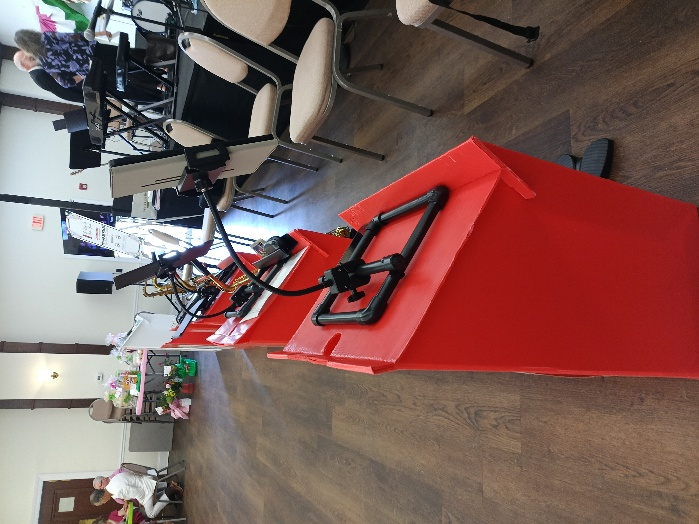
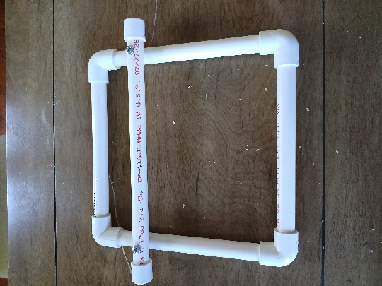
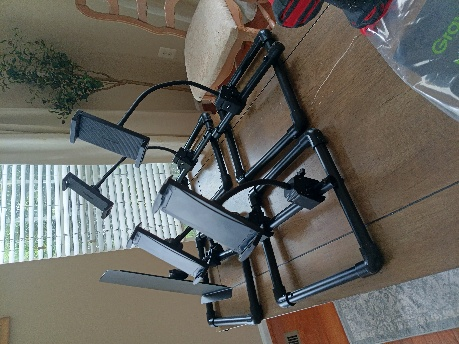

A raised crossbeam
A lightweight rectangular PVC frame with a top-mounted crossbeam. Removable fasteners allow a tablet holder or traditional sheet-music clamp to attach to the beam.
Your bandfront sets the stage.
Your music should meet your eyes.
An ergonomic support stand that raises a tablet or printed sheet music toward eye level—designed for seated musicians and the bandfronts they already use.
Explore the design
Reading from a low bandfront can draw your gaze—and your posture—downward. Gig Rig starts with a simple idea: bring the music higher, so your setup works around the way you play.
Its raised frame is designed to encourage an upright seated posture and support comfortable breathing while playing. It rests on an existing bandfront without permanent modification.
A straightforward frame. An adjustable mount. Details shaped by the realities of rehearsal and performance.
A lightweight rectangular PVC frame with a top-mounted crossbeam. Removable fasteners allow a tablet holder or traditional sheet-music clamp to attach to the beam.
The concept allows the tablet clamp to move left and right along the crossbeam, bringing the chart into your preferred reading position.
Portrait for a full page. Landscape for a wider view. The adjustable tablet mount is intended to accommodate both orientations.


A cup holder is also part of the concept, keeping one more everyday item within reach.
Gig Rig is the invention of Jack Skorija, a retired U.S. Army musician and active saxophonist. It grows out of a familiar experience: working around a stand when the stand should work around the musician.
His aim is a practical setup that brings printed or digital sheet music into a more natural line of sight, while fitting into the familiar big-band stage.